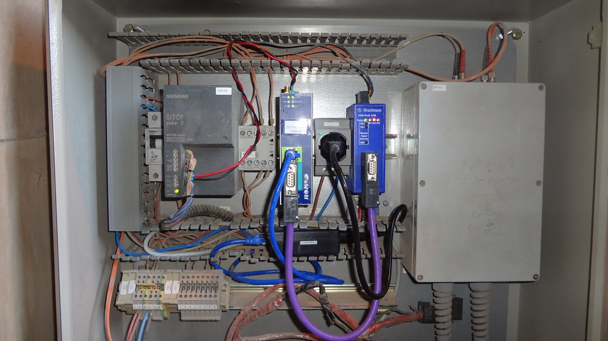
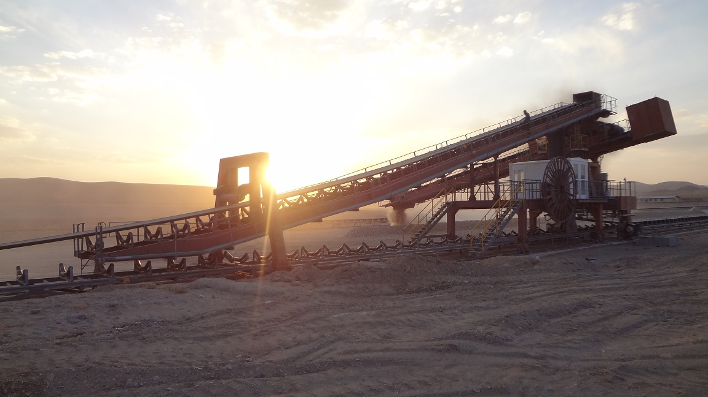

انتقال اطلاعات آنالوگ و دیجیتال و شبکه های صنعتی Profibus به صورت Wireless
بازگشت به صفحه اصلیحذف کامل Slip ring در استکر و ریکلایمر کارخانه هی سیمان بوسیله ی بی سیم کردن انتقال data
برد آنتنهای مورد استفاده در انتقال data به صورت بیسیم 15 km می باشد.
نانتقال اطلاعات دیجیتال و آنالوگ 4 تا 20 mAآ

امکان حذف کابلهای profhbus جایگزیتی شبکه ی بی سیم

حذف کامل موتورها و ذغتالهای مربوط به سیستم گردش slip ring

انتقال data بین هر دو نقطه ای حتی اگر دید مستقیم نداشته باشند.